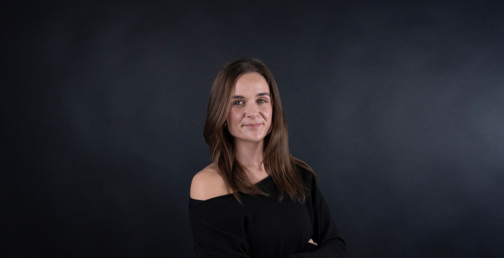

Mathilde Gjerster - Multimediedesigner
Kreativ problemløser med øje for design og digital innovation
Jeg er multimediedesigner med passion for at skabe visuelle løsninger, der kombinerer æstetik, funktionalitet og brugeroplevelse. Mit arbejde spænder fra grafisk design og digitalt indhold til webdesign og interaktive medier. Jeg elsker at forvandle idéer til gennemførte koncepter, hvor design og teknologi går hånd i hånd.
Med en stærk forståelse for designprincipper, typografi og farveteori skaber jeg layouts, der er både engagerende og intuitive. Jeg arbejder med moderne værktøjer og metoder, og har erfaring med UX/UI-design, responsivt webdesign og visuel identitet. For mig handler godt design om at kommunikere klart og skabe værdi for både brugeren og virksomheden.
Udannelse & erfaring
AK i Multimediedesign - UCL 2025 - 2027
HHX Sport, Event & Management - Svendborg Handelsegymnasium 2019 - 2023
Se min arbejdserfaring på Linkedin.